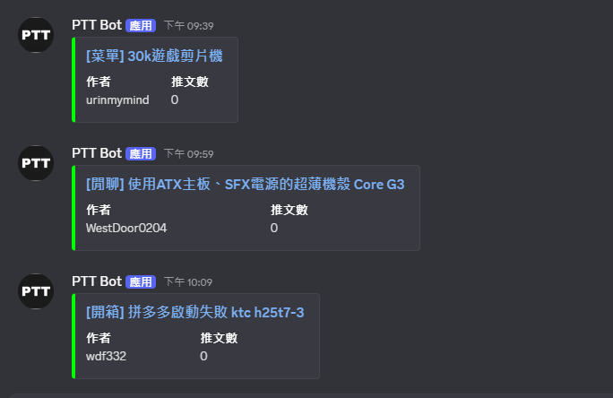

謝文捷 | Hsieh Wen Chieh
專案:製作DISCORD的PTT爬文機器人
專案簡介
這是一個用 Python 製作的 Discord 機器人，能夠自動從 PTT 的 PC_Shopping 板抓取最新文章，並即時推播到指定的 Discord 頻道中。整個專案部署在自架的 Linux VM 上，並支援開機自啟動，方便穩定運行。
目前佈署群組
PTT電蝦版爬文 Bot 已成功部署至大型 Discord 社群：米奇不妙屋（超過 7,000 位成員的大型電腦零組件交流社群）
功能說明
• 定時爬取 PTT 看板預設 (PC_Shopping)
• 即時推播新文章連結到 Discord 頻道
• 自動重啟與開機自啟動設定
技術細節
• 使用 requests + BeautifulSoup 爬取 PTT 文章
• Discord Bot 架設於 discord.py 套件（支援 command 與訊息觸發）
• 搭配 APScheduler 實現每分鐘自動任務排程
• 使用 .env 管理 Discord Token 與發文頻道ID
• 最終部署在私人伺服器的 Debian 虛擬機上
實際運作畫面
"有新文章時，Discord 頻道自動顯示文章標題與連結(藍色字體為連結)"
原始碼與部署教學
Githubbot.py
import discord
from discord.ext import commands
import requests
from bs4 import BeautifulSoup
import json
import asyncio
# 讀取設定檔
with open("config.json", "r") as f:
config = json.load(f)
TOKEN = config["token"]
CHANNEL_ID = int(config["channel_id"])
PTT_URL = "https://www.ptt.cc/bbs/PC_Shopping/index.html"
seen_links = set()
# 設定 Intents
intents = discord.Intents.default()
intents.guilds = True
intents.messages = True
bot = commands.Bot(command_prefix="!", intents=intents)
# 抓取 PTT 電蝦文章
def fetch_articles():
headers = {"cookie": "over18=1"}
res = requests.get(PTT_URL, headers=headers)
soup = BeautifulSoup(res.text, "html.parser")
entries = soup.select("div.r-ent")
new_articles = []
for entry in entries:
a_tag = entry.select_one("div.title a")
if not a_tag:
continue
title = a_tag.text.strip()
href = "https://www.ptt.cc" + a_tag["href"]
push = entry.select_one("div.nrec").text.strip()
author = entry.select_one("div.meta .author").text.strip()
if href not in seen_links:
seen_links.add(href)
new_articles.append({
"title": title,
"href": href,
"author": author,
"push": push or "0"
})
return new_articles[::-1]
@bot.event
async def on_ready():
print(f"✅ 成功登入 Discord Bot：{bot.user}")
try:
channel = await bot.fetch_channel(CHANNEL_ID)
await channel.send("🤖 機器人已啟動，開始監控 PTT 電蝦版。")
except Exception as e:
print(f"[錯誤] 發送啟動訊息失敗：{e}")
return
while True:
try:
print("🔍 正在抓取 PTT 電蝦文章...")
articles = fetch_articles()
print(f"📥 抓到 {len(articles)} 篇新文章")
for article in articles:
embed = discord.Embed(title=article["title"], url=article["href"], color=0x00ff00)
embed.add_field(name="作者", value=article["author"], inline=True)
embed.add_field(name="推文數", value=article["push"], inline=True)
await channel.send(embed=embed)
except Exception as e:
print(f"[錯誤] 推文失敗：{e}")
await asyncio.sleep(300) # 每 5 分鐘掃一次
bot.run(TOKEN)
dcpttbot.service
[Unit]
Description=Discord Bot - dcpttbot
After=network.target
[Service]
Type=simple
WorkingDirectory=/home/dcptt
ExecStart=/home/dcptt/venv/bin/python /home/dcptt/bot.py
Restart=always
RestartSec=5
User=root
[Install]
WantedBy=multi-user.target
config.json
{
"token": "(你的機器人TOKEN)",
"channel_id": "(想發文的頻道ID)"
}
心得
這次架設 Discord PTT 爬文機器人，從程環境建置到自動化部署，雖然過程中遇到一些套件安裝、權限錯誤或是系統重開後失效等問題，但一步步排查後，也讓我更熟悉了 Linux 系統操作與 Discord Bot 的整體流程。 未來我也打算持續優化這個 Bot，比如加入推播條件篩選、自動重啟偵測，甚至結合網頁介面做成一個簡單的後台。 如果你也有想架設自己的爬文通知機器人，這篇文章希望能對你有幫助！